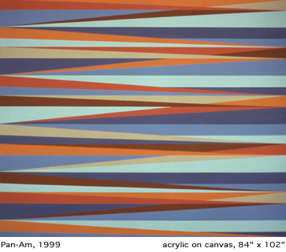

Odili
Donald Odita
The work of -
The "had dream of modernism" is what T.J. Clark in Pollock's
Abstraction, writes of art's inability to escape the metaphoric, the
commodity. This fate for painting is discussed in light of Cecil Beaton's
1951 Vogue photographs which employed Pollock's Autumn Rhythm as decorative
backdrop for fashion spread, pointing to the modernist problematic of
kitsch and the avant-garde. This translation, deflation, and entrance
of art into the popular domain, and vice-versa, in turn is played upon
by Warhol, Johns, Rauschenberg, et al. And it is to the legacy and irony
of abstract painting's resistance to collapsing into decoration, as
evidenced in early Greenbergian difficulty with Pollock's all-over gestural
style (webs likened to textile for example), to this tension of the
reception of abstraction as decoration, that is of particular interest
to the painterly production of Nigerian-American artist Odili Donald
Odita.
Odita goes so far as to literalize this rhetoric by producing wallpaper/collage
paintings, calling into questions notions of taste and decor, and using
mass media inspired grids as his point of departure to extend the Warholian
critique of authenticity and capital to contemporary discourse of identity
in the visual field. O dita
discusses the use of wallpaper in his enterprise in terms of its signaling
the historical negotiation and entrance into the realm of modernist
of painting of the quotidian, the "low," located in his practice
from the decorative to detritus, from his early base materialist practice
to his present sleek hard edge style. As such, he retroactively takes
on the major tropes of abstraction. For example, in painting directly
on the wall of the gallery in "Intermission," or in extending
his lines to the edge of his canvases, pointing to the realm of "the
real" in "Contact," he deliberately engages with historical
debates on the desublimation of painting and on questioning the parameters
of the pictorial field. dita
discusses the use of wallpaper in his enterprise in terms of its signaling
the historical negotiation and entrance into the realm of modernist
of painting of the quotidian, the "low," located in his practice
from the decorative to detritus, from his early base materialist practice
to his present sleek hard edge style. As such, he retroactively takes
on the major tropes of abstraction. For example, in painting directly
on the wall of the gallery in "Intermission," or in extending
his lines to the edge of his canvases, pointing to the realm of "the
real" in "Contact," he deliberately engages with historical
debates on the desublimation of painting and on questioning the parameters
of the pictorial field.
His work evokes more than a fusion of cultural practices and experiences
of African and Euro-American origins and influences. Odita's interest
in American pop culture and artistic production, coalescent with West
African visual tropes, critically engages with the compounded history
of Africa's reciprocal relationship to Occidental modernism. Odita is
able to enlist a post-colonial critique that doesn't need to rely on
the textual or on the body, but does so on the levels of appropriation,
taste, desire, and perception, vis-a-vis his serial and signature brand
of non-figurative abstraction.
Criticism of Odita's practices stresses his work as the product of a
syncretic language of both African and American visual and cultural
influences and experiences, yet the work formally seems to concern itself
equally with the negotiation of the status and life of painting at the
turn of the century. Perhaps his task is to negotiate the questions
of subjectivity in non-figurative terms. Early experiments with base
materials resulting in Dubuffet-inspired-heavily factured surfaces were
abandoned for a present ambitious and mature style based on post-Pollockian
and Stellian opticality, which marks an inheritance of the legacy of
color field painters in the destabilization of perception. Odita's optical
play is performed by his signature severed, jagged planes of a dissonant
palette. This unpenetrable animated surface, difficult to access as
a totality, brings the observer back onto his/her own body.
His current exhibition entitled "Color Theory" at Florence
Lynch gallery in New York City directly references both the artist's
relationship to Color Field painting and Op Art of the sixties and the
politics of identity rehearsed in his own work. Stella's grids and Newman's
zips serve as a point of departure for Odita's sonorous reanimation
of reductive formalist painting. The zip of Newman is reworked and tilted
from the sublimated vertical axis to a multi-tiered diagonal line moving
towards the horizontal, creating a vibrating, oscillating, and pulsing
surface, prohibiting the eye from fixing on an image. This pitch into
the orientation of line produces a dynamic and jagged pattern as leitmotif,
and collapses the dichotomous rhetoric of the high and the low (culture/nature),
so resonant in the history of modem painting. His tiers of color are
dehierarchized alluding to both formal and cultural imperatives.
The artist and his critics often reference the paintings' formal evocation
of West African textiles in terms of pattern. This can be extended to
the ways in which questions of identity surface in the work. In so doing,
Odita elicits notions of West African textiles as mnemonic and communicative
devices, and more generally, as popular emblems of Afrocentricity when
appropriated in the West, mass produced and made into universalizing
signs referencing continental "Africa." This
mode of identification is turned against itself in Odita's paintings.
He extends this critique to the legacy of Africa's role in and relationship
to Euro-American modernist abstraction, one that is completely interrelated
yet historically sequestered in terms of circulation, reception, and
categorization. In putting pressure on the classification of "Contemporary
African Art," Odita revises the language of American hard edge
abstraction and inserts his own narratives. He maintains, "In my
paintings, I am dealing with memory, the presence and absence of experiences
removed; nostalgia for a lost past, and the hope for something new and
better."
Lauri Firstenberg
Lauri
Firstenberg is a PhD candidate at Harvard University in the History
of Art and Architecture Department. Firstenberg is Head Curator at Artist
Space, NYC.
(c) Lauri Firstenberg
|